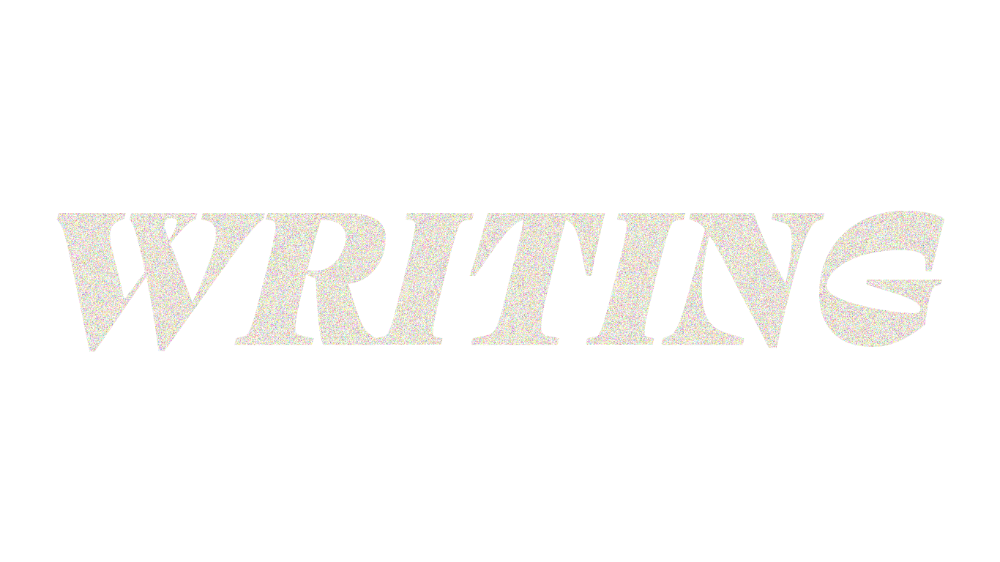
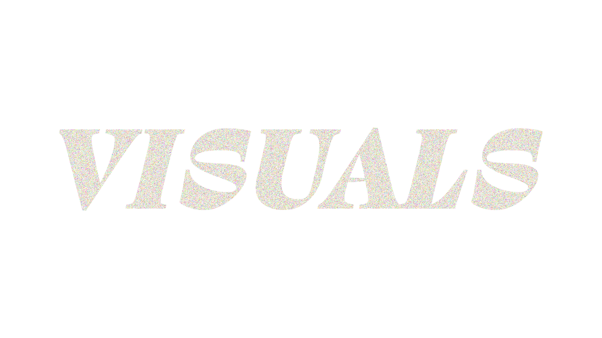
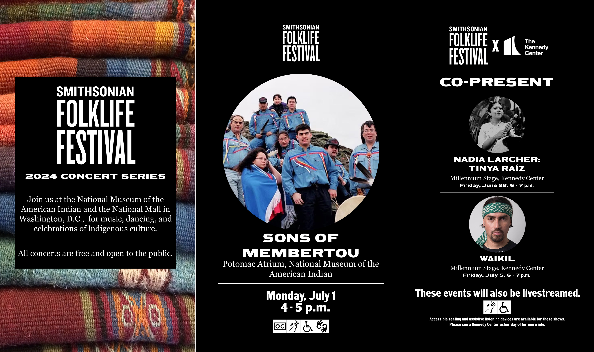

molly szymanski
hi!
i am a journalist and designer in the
washington, dc - baltimore area.
some recent work...

- From Red Solo Cup to Cowboy Carter: How country music has morphed in the mainstream — Capital News Service
- What makes a hit? A look into 2024's top-charting songs — Capital News Service
- Bad Bunny, Música Mexicana, and the latin music explosion of 2023 — Capital News Service
- As resale ticket prices climb, the live music industry looks for solutions — Capital News Service
- Review: Rat Saw God by Wednesday — WMUC Radio Best Albums of 2023
- Review: TAGABOW electrifies Baltimore audience in their first stop on U.S. tour — WMUC Radio
- Review: Gargoyles, ghouls, and Grog: Frog's newest release is confident and swampy — WMUC Radio
- Ed Hrybyk’s Weekly Jazz Jams Bring Free Music to City Parks — Baltimore Magazine GameChangers
- Dutch Courage’s Kim Vo Heads to National Bartending Competition — Baltimore Magazine
- ‘One of the best experiences of my life’: Big Time Rush ignites campus — The Diamondback
- Persistent Vision: How UMD’s Punk Collections came to be — Finalist, D.C. Student Arts Journalism Competition

Smithsonian Folklife Festival

Instagram story posts for @smithsonianfolklife, June 2024
Web design, Artists page for 2024 Smithsonian Folklife Festival, June 2024
Capital News Service
Logo design, CNS special project, May 2024

Data graphic, CNS breaking news reporting, March 2024
WMUC Radio
Instagram posts for @wmucradio, 2022-2024

Zine spread for WMUC's zine,"Requiem," May 2024